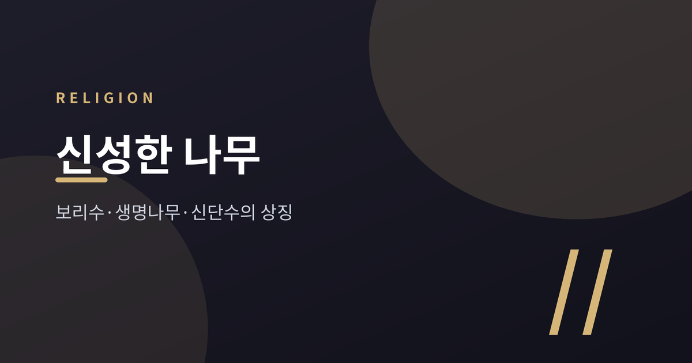
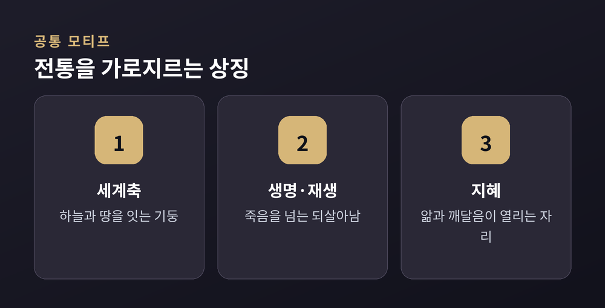
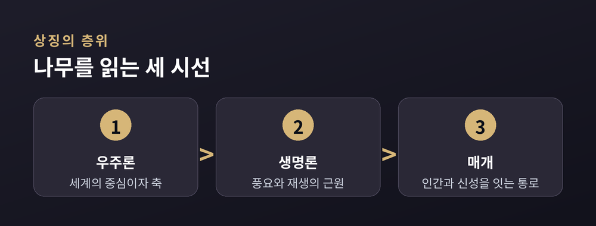

비교종교학으로 읽는 나무 신앙

이번 글에서는 세계 여러 종교와 민간신앙에 등장하는 신성한 나무를 다뤄보려 합니다. 불교의 보리수, 유대교·기독교의 생명나무, 북유럽 신화의 위그드라실, 한국의 신단수까지 — 나무는 왜 이토록 자주 신성함의 자리가 되었을까요. 특정 신앙의 우열을 가리려는 글이 아니라, 비교종교학의 시선으로 각 전통을 나란히 놓고 살펴보는 자리임을 먼저 밝혀둡니다.
본격적으로 들어가기 전에, 이번 글에서 다룰 네 가지 사례를 표로 정리했습니다. 각 전통에서 나무가 맡은 역할은 조금씩 다르지만, 신성함이 머무는 자리라는 점만큼은 공통적입니다.
보리수는 특정한 나무 한 그루를 가리키는 이름입니다. 인도 비하르주 보드가야, 그 나무 아래에서 붓다가 깨달음을 얻었다고 전해집니다. 학명으로는 성스러운 무화과, 피쿠스 렐리기오사입니다.
지금 보드가야의 마하보디 사원에 서 있는 나무는 원래 보리수의 후계목으로 여겨집니다. 스리랑카 아누라다푸라에도 기원전 3세기 아소카왕이 보낸 가지에서 자랐다는 보리수가 있습니다. 이 나무의 식수 연대는 기원전 288년으로 알려져 있는데요, 현존하는 속씨식물 가운데 나이가 확인된 것으로는 가장 오래된 축에 듭니다.
불교 도상에서 보리수는 하트 모양 잎으로 쉽게 구별됩니다. 보리수 씨앗으로 만든 염주는 지금도 귀하게 여겨집니다. 다른 전통의 세계수가 우주 자체를 상징하는 것과 달리, 보리수는 특정한 역사적 순간과 결부된 나무입니다. 그럼에도 "나무 아래에서 궁극의 앎에 이른다"는 이야기 구조는 뒤에서 살펴볼 세계축 모티프와 맞닿아 있습니다.
창세기에는 에덴동산 한가운데 두 그루의 나무가 서 있었다고 기록되어 있습니다. 하나는 생명나무, 다른 하나는 선악을 알게 하는 나무입니다. 생명나무의 열매를 먹으면 불멸을 얻는다고 하며, 신은 인간에게 그 열매를 먹지 말라고 명합니다. 아담과 하와가 선악과를 먹은 뒤, 신은 화염검을 든 천사를 세워 생명나무로 가는 길마저 막습니다.
두 나무는 상징하는 바가 다릅니다. 생명나무는 풍요와 영생을 주는 근원으로, 선악과나무는 앎과 그 대가를 짊어지는 자리로 흔히 읽힙니다.
이 사건을 어떻게 해석할지는 신학 전통마다 다릅니다. 인류의 타락으로 보는 시각이 있는가 하면, 지식과 자율성을 얻은 대가로 읽는 시각도 있습니다. 이 글에서는 어느 쪽이 옳다고 판단하지 않으려 합니다. 다만 유대 전통에서는 토라 자체가 생명나무로 불리기도 하고, 중세 이후 카발라에서는 생명나무가 신의 열 가지 유출을 나타내는 도표로 발전했다는 점만 짚어두겠습니다. 나무 하나에 이렇게 여러 층의 해석이 쌓인 셈입니다.
위그드라실은 북유럽 신화의 물푸레나무입니다. 흔히 세계수라고도 부릅니다. 이 나무는 아홉 개의 세계 전체를 떠받치고, 가지는 온 세상으로 뻗어 하늘까지 닿습니다. 산문 에다에는 신들이 매일 이 나무 아래 모여 회의를 열었다고 적혀 있습니다.
나무를 둘러싼 존재들의 이야기도 흥미롭습니다. 꼭대기에는 지혜로운 독수리가 세상을 굽어보고, 뿌리에서는 용 니드호그가 뿌리를 갉아먹습니다. 다람쥐 한 마리가 줄기를 오르내리며 둘 사이의 험담을 실어 나른다고 전해집니다. 뿌리 아래에는 운명의 샘이 있고, 그 곁에서 노른이라 불리는 존재들이 나무를 보살핀다는 서술도 있습니다.
위그드라실은 하늘과 땅, 지하세계를 잇는 수직의 축입니다. 에덴의 나무들과는 서사가 전혀 다르지만, "나무가 세계를 지탱한다"는 발상만큼은 놀라울 정도로 닮았습니다.
한국 신화에도 신성한 나무가 등장합니다. 『삼국유사』와 『제왕운기』에 나오는 신단수입니다. 환웅이 무리를 이끌고 하늘에서 내려왔다는 태백산정의 나무인데, 두 기록의 묘사가 조금 다릅니다. 『삼국유사』에서는 웅녀가 신단수 아래에서 아이 갖기를 빌었다고 하여, 나무가 기원의 대상으로 그려집니다. 반면 『제왕운기』에서는 나무 자체가 신격을 지닌 존재로 등장합니다. 어느 쪽이 더 오래된 원형인지는 학계에서도 단정하지 않습니다.
신단수는 후대에 서낭나무, 당산나무 신앙으로 이어졌다고 알려져 있습니다. 마을 어귀나 고갯마루에 오래된 나무가 서 있고, 그 아래 돌무더기를 쌓거나 작은 당집을 짓는 풍경은 얼마 전까지도 낯설지 않았습니다. 지나는 이들이 절을 하거나 실오라기, 헝겊 조각을 매다는 풍속도 여러 지역에 남아 있었습니다.
흥미로운 지점은 이 신앙이 한반도에 갇혀 있지 않다는 점입니다. 만주와 몽골, 시베리아의 샤머니즘 문화권에도 비슷한 신간·조간 신앙이 폭넓게 나타납니다. 국내 한 학술 자료는 이 지점에서 종교학자 미르체아 엘리아데를 직접 인용하며, 한국의 신수·당산나무 신앙을 "세계의 중심, 우주를 떠받치는 나무"라는 세계 보편적 수목신앙의 한 갈래로 설명합니다. 지역은 다르지만 문법은 같다는 뜻입니다.
힌두교의 성스러운 무화과, 아슈밧타는 불교의 보리수와 식물학적으로 같은 종입니다. 『바가바드기타』에서 크리슈나는 이 나무를 뿌리가 위에, 가지가 아래로 뻗은 "거꾸로 선 나무"로 묘사합니다. 물질세계를 상징한다는 것인데요, 뒤집힌 형상 자체가 우주의 상호연결성을 나타낸다고 해석됩니다. 반얀나무 역시 인도아대륙에서 널리 신성시되는 나무로, 뿌리를 늘어뜨려 넓게 퍼지는 생장 방식 때문에 생명력과 풍요의 상징으로 읽힙니다. 다만 이 부분의 세부 풍습은 학술 백과보다 대중 종교문화 자료에 의존한 서술이 많아, 신중하게 받아들일 필요가 있습니다.
켈트족 드루이드에게는 참나무가 가장 신성한 나무였습니다. "드루이드"라는 말 자체가 켈트어로 참나무를 뜻하는 단어에서 왔다는 설이 있을 정도입니다. 참나무 숲은 예배와 의례의 공간이었고, 참나무는 진실과 용기, 이승과 영계를 잇는 관문으로 여겨졌다고 전해집니다. 다만 드루이드 스스로 남긴 1차 문헌이 거의 없다 보니, 이 전통에 관한 서술 다수는 후대에 재구성된 자료에 기대고 있다는 한계도 함께 밝혀둡니다.
지금까지 살펴본 나무들은 지리적으로도, 시대적으로도 서로 아무런 접점이 없습니다. 그런데도 반복해서 등장하는 그림이 있습니다. 비교종교학에서는 이를 세계축, 라틴어로 악시스 문디(axis mundi)라고 부릅니다. 하늘과 땅을 잇는 세계의 중심이라는 뜻입니다.
미르체아 엘리아데는 신성한 장소가 의례적 봉헌이나 신성의 현현을 통해 주변의 세속적 공간과 질적으로 달라진다고 보았습니다. 나무는 이 축을 표현하기에 알맞은 형태를 갖추고 있습니다. 뿌리는 땅속으로 파고들고, 줄기는 지상을 딛고, 가지는 하늘로 뻗습니다. 유기적인 생김새 자체가 이미 수직의 이야기를 하고 있는 셈입니다.

Britannica의 정리에 따르면 세계수 상징은 크게 두 갈래로 나뉩니다. 하나는 하늘과 땅 사이를 잇는 통로 역할을 하는 수직형, 이른바 지혜의 나무 전통입니다. 위그드라실이나 에덴의 지식나무가 여기에 가깝습니다. 다른 하나는 세계의 중심에 자리해 영생과 풍요를 주는 수평형, 생명의 나무 전통입니다. 에덴의 생명나무가 이쪽입니다. 같은 뿌리에서 갈라진 두 가지 읽기인 셈입니다.
같은 나무를 조금 다른 눈으로 읽어볼 수도 있습니다. 하나는 세계의 중심축이라는 우주론적 읽기, 하나는 풍요와 재생의 근원이라는 생명론적 읽기, 하나는 인간과 신성 사이를 잇는 매개라는 읽기입니다. 어느 하나가 정답은 아닙니다. 나무 한 그루가 감당하는 상징의 층위가 그만큼 두껍다는 뜻으로 이해하는 편이 맞을 것입니다.

정리하면 이렇습니다. 보리수는 특정한 순간의 나무이고, 생명나무와 위그드라실은 세계 자체를 짊어진 나무이며, 신단수는 하늘에서 내려온 신을 땅에 붙들어 둔 나무입니다. 표현은 저마다 다르지만, 나무 아래에 서서 하늘을 올려다보았던 마음만큼은 크게 다르지 않았을 것입니다.
"나무는 하늘과 땅 사이, 가장 오래된 다리였다"
지금도 어느 마을 어귀에 서 있는 오래된 나무 한 그루를 마주친다면, 무심히 지나치지 않고 한 번쯤 올려다보게 되지 않을까 싶습니다.